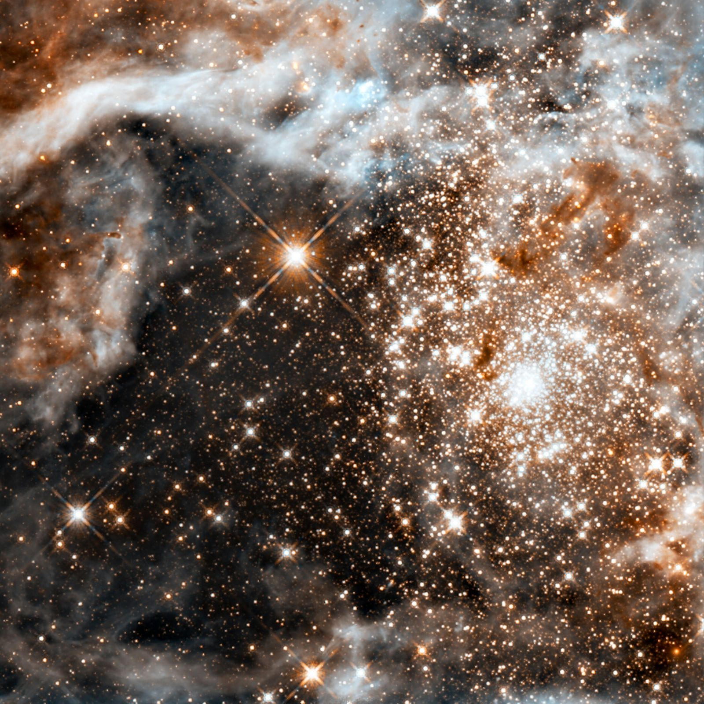

Explorando el Universo
Las estrellas, esos puntos luminosos que adornan el cielo nocturno, son en realidad esferas colosales de plasma incandescente que emiten luz y calor gracias a las reacciones de fusión nuclear que ocurren en sus núcleos. Su nacimiento, vida y muerte están determinados por una delicada danza cósmica de gas, polvo y, sobre todo, gravedad.

El Nacimiento de los Astros: De Nubes a Esferas de Fuego
Las estrellas se originan en el interior de vastas y frías nubes de gas y polvo conocidas como nebulosas moleculares. La gravedad, actuando a lo largo de millones de años, comienza a aglutinar el material de estas nubes en regiones más densas. A medida que estas regiones se contraen, su centro se calienta y la presión aumenta, dando lugar a una protoestrella.
El destino final de esta protoestrella, si se convertirá en una "enana" o en una "gigante", depende fundamentalmente de un solo factor: su masa inicial. La cantidad de materia que logra acumular durante su formación sellará su camino evolutivo.
Estrellas de baja masa (enanas):Si la protoestrella acumula una cantidad de materia relativamente pequeña, se convertirá en una estrella de baja masa. Estas estrellas, como nuestro Sol, son más longevas y menos luminosas.
Estrellas de alta masa (gigantes): Por el contrario, si la protoestrella acumula una gran cantidad de materia, se convertirá en una estrella masiva. Estas estrellas son mucho más grandes, luminosas y tienen vidas considerablemente más cortas.